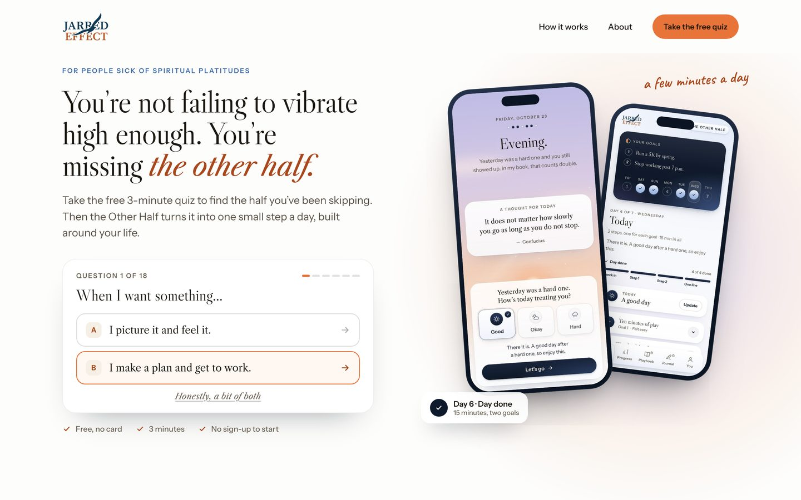
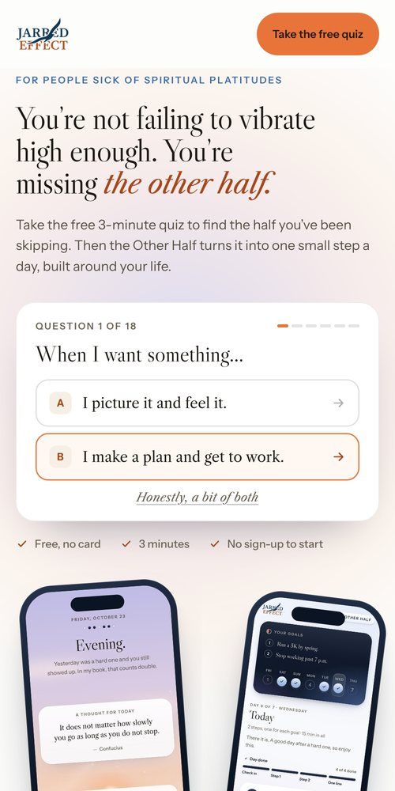
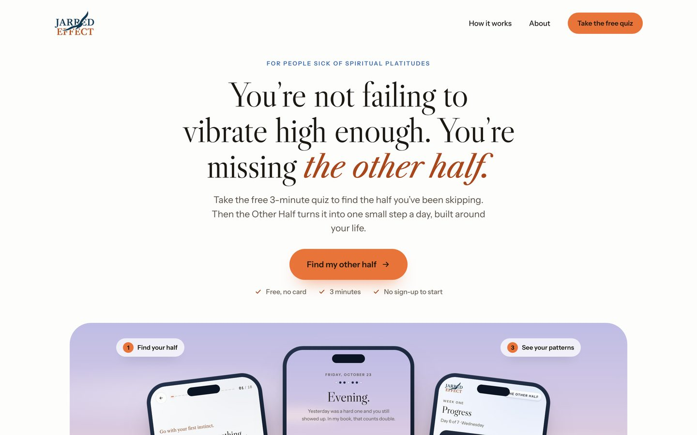
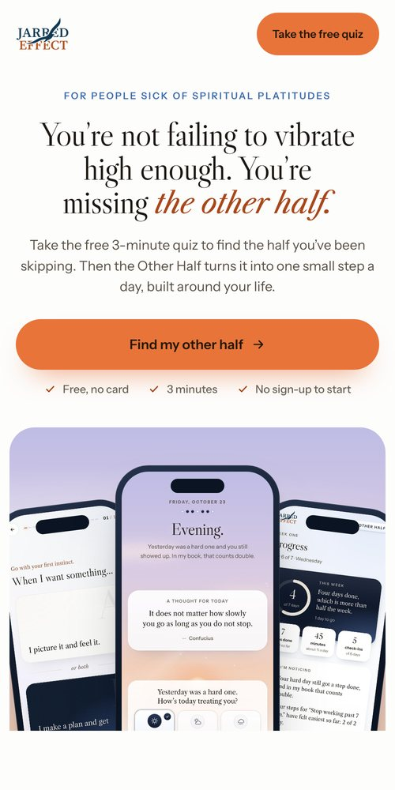
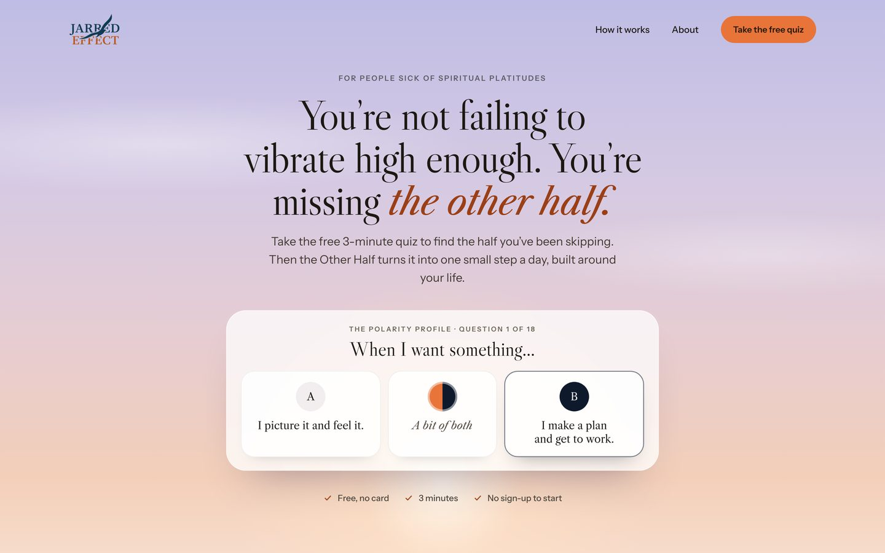
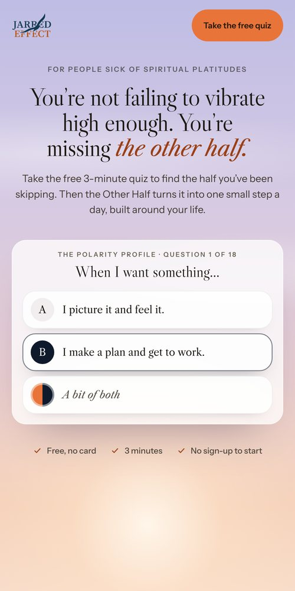

<title>Homepage Directions</title>
<meta name="claude:viewport-fit-sides" content="cover">
<link rel="preconnect" href="https://fonts.googleapis.com"><link rel="preconnect" href="https://fonts.gstatic.com" crossorigin>
<link rel="stylesheet" href="https://fonts.googleapis.com/css2?family=Instrument+Sans:wght@400;500;600&family=Libre+Caslon+Display&family=Libre+Caslon+Text:ital@0;1&display=swap">
<style>
/* Three directions for the homepage's first screen, shown as real renders, with the case for each */
:root{--bg:#f7f4ef;--card:#ffffff;--fg:#1c1812;--dim:#574f43;--faint:#6b6254;--line:rgba(28,24,18,.1);--accent:#a8471c;--accent-bg:#fff4ea;--navy:#0e1a2c;--pick:#e8743a;
  --serif:"Libre Caslon Display","Libre Caslon Text",Georgia,serif;--serif-t:"Libre Caslon Text",Georgia,serif;--sans:"Instrument Sans","Helvetica Neue",Arial,sans-serif}
@media (prefers-color-scheme:dark){:root:not([data-theme="light"]){--bg:#0d141f;--card:#151e2c;--fg:#efe7da;--dim:#c4bcaf;--faint:#a39a8c;--line:rgba(239,231,218,.12);--accent:#f3a378;--accent-bg:rgba(243,163,120,.1);--navy:#a9c3e6;color-scheme:dark}}
:root[data-theme="dark"]{--bg:#0d141f;--card:#151e2c;--fg:#efe7da;--dim:#c4bcaf;--faint:#a39a8c;--line:rgba(239,231,218,.12);--accent:#f3a378;--accent-bg:rgba(243,163,120,.1);--navy:#a9c3e6;color-scheme:dark}
*{box-sizing:border-box}
body{margin:0;background:var(--bg);color:var(--fg);font-family:var(--sans);font-size:16px;line-height:1.55;-webkit-font-smoothing:antialiased}
.wrap{max-width:76rem;margin:0 auto;padding-block:3rem 4rem;padding-left:max(16px,env(safe-area-inset-left,0px));padding-right:max(16px,env(safe-area-inset-right,0px))}
.kick{margin:0;font-size:.75rem;font-weight:600;letter-spacing:.16em;text-transform:uppercase;color:var(--accent)}
h1,h2{font-family:var(--serif);font-weight:400;margin:0;text-wrap:balance;letter-spacing:-.01em}
h1{margin-top:.75rem;font-size:clamp(2rem,4.5vw,3.25rem);line-height:1.05}
.lead{max-width:44rem;margin:1rem 0 0;font-size:1.125rem;color:var(--dim);text-wrap:pretty}
.fixed{display:grid;grid-template-columns:repeat(auto-fit,minmax(min(15rem,100%),1fr));gap:.75rem;margin:2rem 0 0;padding:0;list-style:none}
.fixed li{padding:1rem 1.125rem;border-radius:1rem;background:var(--card);box-shadow:inset 0 0 0 1px var(--line);font-size:.9375rem;color:var(--dim)}
.fixed b{display:block;margin-bottom:.25rem;color:var(--fg);font-weight:600}
.dir{margin-top:3.5rem;padding:1.75rem;border-radius:1.75rem;background:var(--card);box-shadow:inset 0 0 0 1px var(--line),0 1.5rem 3rem -2.5rem rgba(6,12,24,.4)}
.dir.is-rec{box-shadow:inset 0 0 0 2px var(--pick),0 1.5rem 3rem -2.5rem rgba(6,12,24,.4)}
.dir-h{display:flex;flex-wrap:wrap;align-items:baseline;gap:.5rem 1rem}
.letter{font-family:var(--serif);font-size:2.25rem;line-height:1;color:var(--accent)}
.dir h2{font-size:clamp(1.5rem,3vw,2rem);line-height:1.15}
.rec{display:inline-flex;align-items:center;height:1.75rem;padding:0 .75rem;border-radius:99px;background:var(--pick);color:#241904;font-size:.75rem;font-weight:600;letter-spacing:.06em;text-transform:uppercase}
.idea{margin:.625rem 0 0;font-family:var(--serif-t);font-style:italic;font-size:1.1875rem;color:var(--fg);text-wrap:pretty}
.shots{display:grid;grid-template-columns:minmax(0,1fr) minmax(0,15rem);gap:1.25rem;align-items:start;margin-top:1.5rem}
@media (max-width:760px){.shots{grid-template-columns:minmax(0,1fr)}.shots figure+figure{max-width:15rem;margin:0 auto}}
figure{margin:0}
.shot{display:block;width:100%;height:auto;border-radius:.875rem;box-shadow:0 0 0 1px var(--line),0 1.25rem 2.5rem -1.75rem rgba(6,12,24,.5)}
.shot--phone{border-radius:1.5rem}
figcaption{margin-top:.5rem;font-size:.75rem;font-weight:600;letter-spacing:.12em;text-transform:uppercase;color:var(--faint)}
.why{display:grid;grid-template-columns:repeat(auto-fit,minmax(min(16rem,100%),1fr));gap:1rem 1.5rem;margin:1.5rem 0 0;padding:1.25rem 0 0;border-top:1px solid var(--line)}
.why h3{margin:0 0 .25rem;font-size:.75rem;font-weight:600;letter-spacing:.12em;text-transform:uppercase;color:var(--faint)}
.why p{margin:0;font-size:.9375rem;color:var(--dim);text-wrap:pretty}
.next{margin-top:3.5rem;padding:1.75rem;border-radius:1.75rem;background:var(--accent-bg)}
.next h2{font-size:1.625rem}
.next ol{margin:1rem 0 0;padding-left:1.25rem;display:grid;gap:.5rem;color:var(--dim)}
.next b{color:var(--fg)}
.ask{margin:1.25rem 0 0;font-weight:600}
</style>
<main class="wrap">
  <p class="kick">The Other Half · Homepage</p>
  <h1>Three directions for the top of your homepage</h1>
  <p class="lead">These are real renders, not sketches. The headline and offer are the same in all three, so you’re judging the design and the flow, not the words. Pick one, or a mix, and I’ll build the rest of the page in that direction.</p>
  <ul class="fixed">
    <li><b>One obvious action</b>The first thing to do is visible on first load, on a laptop and on a phone.</li>
    <li><b>A concrete promise</b>“Take the free 3-minute quiz… then one small step a day, built around your life.”</li>
    <li><b>Risk taken away</b>Free, no card, 3 minutes, no sign-up to start, right under the action.</li>
  </ul>

  <section class="dir">
    <div class="dir-h"><span class="letter">A</span><h2>Quiz first</h2></div>
    <p class="idea">Your promise and the first question on the left, the real app on the right.</p>
    <div class="shots">
      <figure><figcaption>Laptop</figcaption></figure>
      <figure><figcaption>Phone</figcaption></figure>
    </div>
    <div class="why">
      <div><h3>Why it converts</h3><p>The first answer is one tap away, and visitors can see exactly what they’re signing up for. Quiz-led apps tend to land on this layout after testing.</p></div>
      <div><h3>Why it feels right</h3><p>Editorial type on one side, the product on the other, with your handwritten note in the corner.</p></div>
      <div><h3>The trade-off</h3><p>The most familiar of the three, so it surprises the least.</p></div>
    </div>
  </section>

  <section class="dir">
    <div class="dir-h"><span class="letter">B</span><h2>Product stage</h2></div>
    <p class="idea">Your headline and one big button, with the app rising out of its evening sky below.</p>
    <div class="shots">
      <figure><figcaption>Laptop</figcaption></figure>
      <figure><figcaption>Phone</figcaption></figure>
    </div>
    <div class="why">
      <div><h3>Why it converts</h3><p>One button, nothing to weigh up. The phones cut off at the fold pull people into scrolling.</p></div>
      <div><h3>Why it feels right</h3><p>The calmest and most premium. The app’s own sky becomes the stage.</p></div>
      <div><h3>The trade-off</h3><p>One extra tap before the first question, which usually costs a little conversion.</p></div>
    </div>
  </section>

  <section class="dir is-rec">
    <div class="dir-h"><span class="letter">C</span><h2>Step into the app</h2><span class="rec">My pick</span></div>
    <p class="idea">The site opens inside the app’s evening sky and asks the first question with the app’s own tiles.</p>
    <div class="shots">
      <figure><figcaption>Laptop</figcaption></figure>
      <figure><figcaption>Phone</figcaption></figure>
    </div>
    <div class="why">
      <div><h3>Why it converts</h3><p>The first question is the button, and the tiles look like buttons because they’re the app’s own Good / Okay / Hard style. One tap lands in question 2, so the quiz feels already started.</p></div>
      <div><h3>Why it feels right</h3><p>Only you could have this one: your app’s sky, and your half-orange, half-navy orb as “a bit of both”. The site and the app finally feel like one world, which builds trust at the hand-off.</p></div>
      <div><h3>The trade-off</h3><p>No phone on first load. The app’s screens show up in “How it works”, one scroll down.</p></div>
    </div>
  </section>

  <section class="next">
    <h2>After you pick</h2>
    <ol>
      <li><b>The rest of the page follows the same direction</b>, keeping the journey: the problem, why it happens, you, how it works, where it leads, the doubts, then your move.</li>
      <li><b>Proof is the biggest lever still missing.</b> Once testers start, one real line under the question will lift sign-ups more than any design change. I won’t invent any.</li>
    </ol>
    <p class="ask">Tell me A, B or C in chat, or leave a comment on the one you like.</p>
  </section>
</main>
